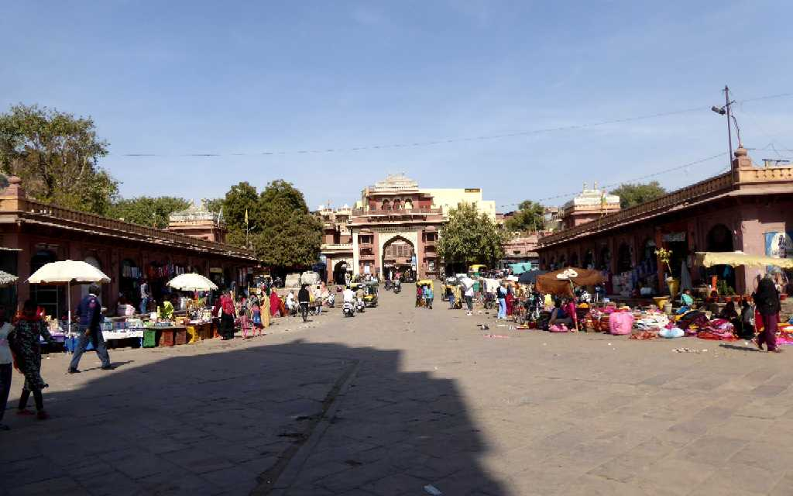
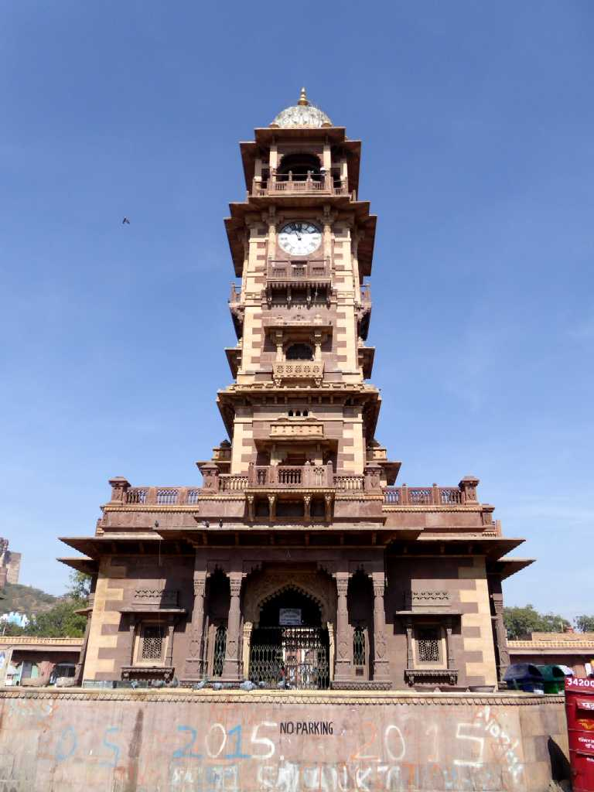
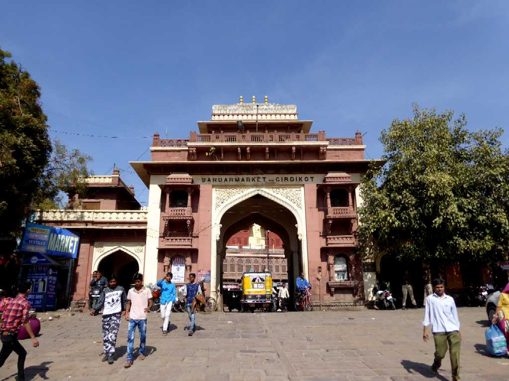
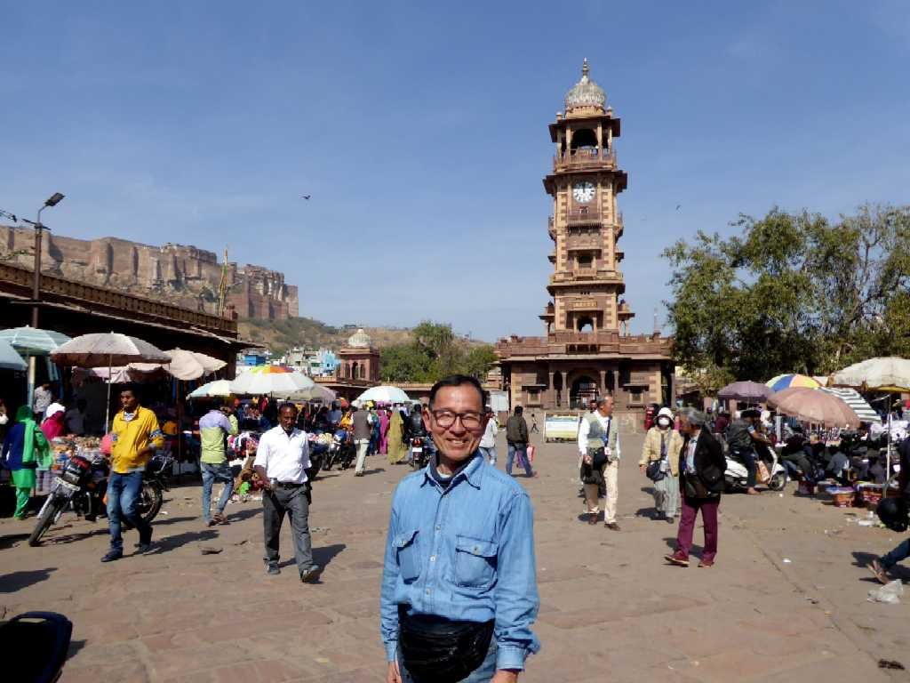

Sardar Market Jodhpur
タール砂漠の入り口の街として栄えたジョドプール中心街にある時計塔市場

Clock Tower Jodhpur

Sardar Market Gate Jodhpur
Blue City from Mehrangarh Fort View Jodhpur
青く塗られた家が多く建ち並ぶブルーシティーを城塞から望む

January 28 2018 Jodhpur